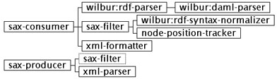
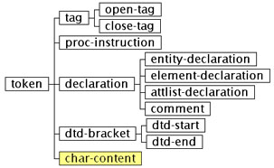
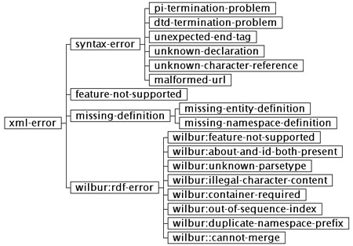

Wilbur: XML Parser
-
Using the XML Parser
-
XML Parser API
-
Producer/Consumer API ("SAX-like")
-
Token Classes
-
Condition Classes
-
Auxiliary Parser Functionality
-
Simple String Dictionaries
1. Using the XML Parser
Invoking the XML parser is done using either the function parse-from-file
or the function parse-from-stream.
Underneath, the parser itself is implemented by an instance of the class
xml-parser.
The parser uses a "SAX-like" consumer/producer API.
During parsing, the parser may signal various conditions
to indicate that something unexpected has happened (such as some syntax
error, for example). These errors can be caught, but are typically not
continuable. Certain warnings are signaled using the class xml-warning.
parse-from-file (file parser-class
&rest options) [Function]
This function will read a file and parse its contents. Parsing is done
using a parser instantiated from the class parser-class, with options
passed to make-instance. Parsing is done by calling parse-from-stream
for the open file stream. The parameter file will have to be anything
accepted by the Common Lisp function open.
parse-from-stream (stream locator
parser-class &rest options) [Function]
This function will read a document from an open stream and parse its contents,
using a parser created by passing parser-class and options
to make-instance. The parameter locator is the URL of the
source of the stream (if applicable, or nil otherwise).
2. XML Parser API
xml-parser [Class]
:expand-namespaces-p [Initarg]
This is the base class of XML parsers. The initarg expand-namespaces-p,
when true (the default), will cause all namespaces references to be expanded
(by concatenating the namespace URI with the name in question); if false,
names are left unexpanded. This class is a subclass of sax-producer.
get-entity (parser name)
[Generic function]
This function will return the definition of an entity named name,
or nil if the entity has not been defined. It is called by the
parser when it encounters entity references.
(setf get-entity) (definition
parser name) [Generic function]
This function will assign the string definition as the definition
of the entity named name. It is called by the parser when it encounter
entity deifnitions.
get-canonical-uri (parser
uri) [Generic function]
This function will return the "canonical" form or the URI uri. It
can be used to map old or alternate namespace URIs (for example) to new
or canonical ones.
(setf get-canonical-uri)
(canonical-uri parser uri) [Generic function]
This function will assign canonical-uri (a string) as the "canonical"
version of the URI uri (a string). See the definition of the function
get-canonical-uri
for a discussion of "canonical" URIs.
parse (parser stream locator)
[Generic function]
This function will initiate the parsing process, reading from the open
input stream stream. The parameter locator is the URL of
the source of the stream.
expand-name-with-namespace
(string namespaces) [Function]
This function will expand string (of the format prefix:name) into
a full URI, using the a-list namespaces of prefix-to-URI mappings.
reverse-expand-name (string
namespaces) [Function]
This functions will perform the opposite of expand-name-with-namespace,
taking the URI string and returning it into the prefix:name
format.
xml-formatter [Class]
:stream [Initarg]
This class, a subclass of sax-consumer, will take a stream of
consumer/producer events and create a textual representation of the XML
document represented by the events. The XML text is written into the output
stream initialized using the initarg stream.
replay (formatter events)
[Generic function]
This function will take a list of events (token subclasses) and
use an xml-formatter instance formatter to create a textual representation
of the XML document represented by the events.
3. Producer/Consumer API ("SAX-like")
The Producer/Consumer API is a bit like the SAX API for Java. The general
idea is that an XML parser, as the "producer", generates "events" during
parsing which are communicated to a "consumer" of these events. The events
form a stream, and this stream can pass through "filters" (objects which
are both consumers and producers). In the implementation, the events are
communicated using function (method) calls, passing "tokens" to the consumer(s).
The token classes are described in a later section
of this document. The figure below shows entire class hierarchy of the
consumer and producer classes.

sax-producer [Class]
:consumer [Initarg]
Base class for event producers. The initarg consumer initializes
the consumer of the producer.
sax-producer-consumer
(producer) [Generic function]
Accesses the consumer of the producer.
(setf sax-producer-consumer)
(consumer producer) [Generic function]
Assigns the consumer of the producer. The method implementation
of this generic function will also set the "inverse" relation, i.e., assign
the producer of the consumer.
sax-consumer [Class]
:producer [Initarg]
Base class for event consumers. The initarg producer initializes
the producer of the consumer.
sax-consumer-producer
(consumer) [Generic function]
Accesses the producer of the consumer.
start-document (consumer
locator) [Generic function]
This event is generated when the parsing of a document begins. The parameter
locator
is the URL of the document.
end-document (consumer mode)
[Generic function]
This event is generated when the parsing of a document has been completed.
See the function sax-consumer-mode
for a discussion of parser modes and the parameter mode.
start-element (consumer
tag mode) [Generic function]
This event is generated for every start tag in an XML document. The parameter
tag
is an open-tag instance. See the
function sax-consumer-mode
for a discussion of parser modes and the parameter mode.
end-element (consumer tag
mode) [Generic function]
This event is generated for every end tag in an XML document. The parameter
tag
is the corresponding open-tag instance
(not the close-tag instance which
you might have expected). See the function sax-consumer-mode
for a discussion of parser modes and the parameter mode.
char-content (consumer content
mode) [Generic function]
This event is generated for all every occurrence of character content in
an XML document (in simple terms, the stuff between start and end tags
that is not another tag). The parameter content is a string. See
the function sax-consumer-mode
for a discussion of parser modes and the parameter mode.
proc-instruction (consumer
instruction mode) [Generic function]
This event is generated for every processing instruction in an XML document.
The parameter instruction is an instance of proc-instruction.
See the function sax-consumer-mode
for a discussion of parser modes and the parameter mode.
find-first-producer
(consumer) [Generic function]
Given a chain of producers and consumers, this method will return the first
producer of the chain (the source of events, that is).
sax-consumer-mode (parser)
[Generic function]
Every event method (except start-document)
will accept a mode parameter. The value of this parameter is calculated
by calling the sax-consumer-mode method of the consumer in question.
In other words, a call (in the parser implementation) to, say, start-element,
might look like this:
(start-element consumer tag (sax-consumer-mode
consumer))
The idea is that any consumer can specialize the event methods on this
parameter (typically using eql specializers) and thus easily implement
a state machine, for example. The implementation (i.e., any method) for
sax-consumer-mode
is sax-consumer subclass-dependent.
The default method returns nil.
4. Token Classes
The XML parser passes instances of various subclasses of token
to the "event" methods of the producer/consumer interface. Below is a table
showing the class hierarchy of these classes, and indicates what kind of
processing (if any) the parser takes with each type of token (remember,
this is an XML parser built to enable RDF parsing, it is not a general
XML parser).
Note that char-content is shown as a subclass of token;
this is true only conceptually, in the implementation the char-content
"tokens" are Common Lisp strings.
The figure below shows the hierarchy of token classes.

The following table describes the classes in terms of their processing
and whether they are instantiable.
| Class |
Class Type |
Processing |
External? |
| token |
abstract |
n/a |
yes |
| tag |
abstract |
n/a |
no |
| open-tag |
concrete |
processed |
yes |
| close-tag |
concrete |
processed |
yes |
| proc-instruction |
concrete |
ignored |
yes |
| declaration |
abstract |
n/a |
no |
| entity-declaration |
concrete |
processed |
yes |
| element-declaration |
concrete |
ignored (xml-warning signaled) |
no |
| attlist-declaration |
concrete |
ignored (xml-warning signaled) |
no |
| comment |
concrete |
ignored |
yes |
| (char-content) |
(Common Lisp string) |
processed |
yes |
| dtd-bracket |
abstract |
n/a |
no |
| dtd-start |
concrete |
ignored (xml-warning signaled
if external DTD) |
no |
| dtd-end |
concrete |
ignored |
no |
token [Class]
This is the abstract base class of all tokens.
token-string (token)
[Generic function]
Accesses a string which names the token (for tags, it is the tag name;
for others, some descriptive, useful representation of the token).
open-tag [Class]
Class of start tags.
close-tag [Class]
Class of end tags.
tag-counterpart (tag)
[Generic function]
Accesses the corresponding open-tag
instance of a close-tag instance.
tag-empty-p (open-tag)
[Generic function]
True if an open-tag instance has
no content (i.e., there is no end tag).
tag-attribute (open-tag
attribute) [Generic function]
Accesses the attribute (named using attribute) of an open-tag
instance.
tag-namespaces (open-tag)
[Generic function]
Accesses the list (an a-list) of all namespace definitions for the element
in which the open-tag instance belongs
(this includes all namespaces declared with this particular tag, as well
as all namespaces of enclosing elements).
proc-instruction [Class]
Class of processing instructions (token-string
accesses the name of the processing instruction). Current implementation
generates these but then ignores them.
entity-declaration [Class]
Class of entity declarations. Note that token-string
accesses the definition of the entity (the "expanded" form, that is).
entity-name (entity-declaration)
[Generic function]
Accesses the name of the entity declaration (the "unexpanded" form, that
is, minus the ampersand and semicolon).
comment [Class]
Class of comments (token-string
accesses the entire text of the comment).
5. Condition Classes
All condition classes (except xml-warning)
are subclasses of xml-error. The figure below shows the hierarchy of condition
classes, including the RDF conditions.

xml-error [Condition class]
:thing [Initarg]
This is the abstract base class of all XML parser condition classes. The
initarg thing is an error-dependent object useful for the processing
of the error.
error-thing (error) [Generic
function]
Accesses the thing object of the error (its semantics are subclass-dependent).
syntax-error [Condition class]
This is the class of all syntax errors. The function error-thing
accesses some descriptive object useful in characterizing the error.
pi-termination-problem [Condition
class]
Signaled for unterminated or improperly terminated processing instructions
(error-thing accesses
the name of the PI).
dtd-termination-problem [Condition
class]
Signaled for improperly terminated DTDs.
unexpected-end-tag [Condition class]
:expectation [Initarg]
Signaled for those end tags which we did not expect (i.e., the current
corresponding start tag has some other name). The function error-thing
accesses the end tag, and the function error-expectation
(initialized using the initarg expectation) accesses the expected
corresponding start tag.
error-expectation (unexpected-end-tag)
[Generic function]
Accesses the corresponding start tag of the expected end tag.
unknown-declaration [Condition
class]
Signaled for any unrecognized declaration.
unknown-character-reference
[Condition class]
Signaled when an unrecognized character reference is encountered. The function
error-thing
accesses the reference.
malformed-url [Condition class]
Signaled when the parsing of a URL string fails. The function error-thing
accesses the ill-formed URI string.
feature-not-supported [Condition
class]
Signaled when some feature not supported by the current implementation
is encountered. The function error-thing
accesses some descriptive representation of the feature.
missing-definition [Condition class]
:type [Initarg]
This abstract condition class represents the situation where a reference
is made to something which has not been defined yet. The concrete subclasses
of this class are used with missing entity and namespace definitions. The
initarg type initializes the definition type.
error-definition-type
(missing-definition) [Generic function]
Accesses the definition type of a missing-definition
instance.
missing-entity-definition
[Condition class]
Signaled when a reference is made to an entity which has not been defined.
Continuing from this error will cause the "unexpanded" form to be used
instead. The function error-thing
accesses the unknown entity name.
missing-namespace-definition
[Condition class]
Signaled when a reference is made to a namespace which has not been defined.
Continuing from this error will cause the "unexpanded" form to be used
instead. The function error-thing
accesses the unknown namespace prefix.
xml-warning [Condition class]
This condition class is used whenever the system need to issue a warning.
xml-warning (message &rest args)
[Macro]
This macro is used in place of warn to issue warnings of the type
xml-warning.
6. Auxiliary Parser Functionality
*current-parser* [Variable]
This variable is bound to the current XML parser instance during parsing.
The purpose of this variable is to provide access to the parser instance
from reader-macro functions (which are not methods).
read-using (readtable stream &optional
recursivep)
[Function]
This function will bind the readtable passed in readtable to *readtable*
and call read in the following manner:
(read stream t nil recursivep)
This function is useful when used with the XML name readtable (bound to
variable *name-reader*)
when XML-style names have to be read outside the parser.
*name-reader* [Variable]
This variable is bound to the XML name readtable, and can be used to read
in XML-style names.
make-file-url (pathname) [Function]
This function will turn a Common Lisp pathname (or a string) into a file-URL
string.
make-http-url (host port path)
[Function]
This function will construct an http-URL from a host, a port
and a path (all strings, except that port can also be an
integer).
parse-url (url) [Function]
This function will parse an URL string, and return two values: the URL
type (either :file or :http) and a property list of URL
components (these are :host for the host name, :port
for the TCP port, and :path for the path component of the URL;
file-URLs only have the path component). If the URL string can not be parser,
malformed-url
condition is signaled.
-whitespace-chars- [Variable]
This constant is a string containing all those characters which the parser
considers to be whitespace.
7. Simple String Dictionaries
String dictionaries are an abstraction which allows string keys to be mapped
to string values. They are used, for example, in the implementation of
tag attributes and namespace mappings. String comparisons are case-sensitive
(they use string=).
string-dict-get (keys&values
key) [Function]
Get the value from the string dictionary keys&values corresponding
to key, or nil if not found.
string-dict-get-by-value
(keys&values value) [Function]
Get the first key from the string dictionary keys&values corresponding
to value, or nil if not found.
string-dict-add (keys&values
key value) [Function]
Return a list where an association from key to value has
been added to the string dictionary keys&values. This function
will not destructively modify keys&values.
string-dict-del (keys&values
key) [Function]
Return a list where the association from key (to its corresponding
value) in the string dictionary keys&values has been deleted.
This function destructively modifies keys&values.
do-string-dict ((key value dict)
&body body) [Macro]
This macro will execute the forms in body in a loop where, in turn, variables
key
and value are bound to the consecutive mappings of the string dictionary
dict.
Copyright © 2001 Nokia. All Rights Reserved.
Subject to the NOKOS License version 1.0
Author: Ora Lassila (ora.lassila@nokia.com)